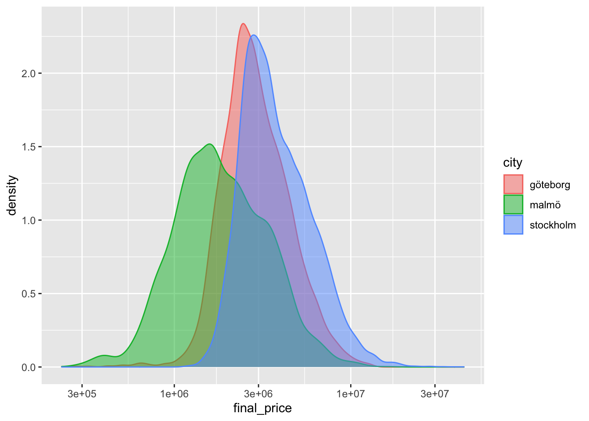

Kapitel 4 Explorativ dataanalys
4.1 Vad är Explorativ Dataanalys?
En kreativ iterativ process där man ställer frågor/gör hypoteser om sin data och sedan utforskar dem
Mera konkret kan det beskrivas som
- Formulera en hypotes
- Transformera din data - om nödvändigt
- Visualisera din data (vårt fokus idag)
- Modellera - om nödvändigt
- Formulera nya hypoteser
Mindset inte formel!
4.1.1 Exempel på basala frågor/hypoteser
Frågeställningar kan vara vaga!
Vad för data innehåller de olika kolonnerna?
Hur ser Datans kvalitét ut? e.g missing values, felaktiga tabellvärden, duplicerade värden
Finns det outliers?
Medelvärde, spridning
4.1.2 Hur gör man i R?
R har basfunktionalitet som kan användas för att snabbt få en numerisk överblick datan t.ex
summary() och head()
summary(iris)## Sepal.Length Sepal.Width Petal.Length Petal.Width
## Min. :4.300 Min. :2.000 Min. :1.000 Min. :0.100
## 1st Qu.:5.100 1st Qu.:2.800 1st Qu.:1.600 1st Qu.:0.300
## Median :5.800 Median :3.000 Median :4.350 Median :1.300
## Mean :5.843 Mean :3.057 Mean :3.758 Mean :1.199
## 3rd Qu.:6.400 3rd Qu.:3.300 3rd Qu.:5.100 3rd Qu.:1.800
## Max. :7.900 Max. :4.400 Max. :6.900 Max. :2.500
## Species
## setosa :50
## versicolor:50
## virginica :50
##
##
## head(iris)## Sepal.Length Sepal.Width Petal.Length Petal.Width Species
## 1 5.1 3.5 1.4 0.2 setosa
## 2 4.9 3.0 1.4 0.2 setosa
## 3 4.7 3.2 1.3 0.2 setosa
## 4 4.6 3.1 1.5 0.2 setosa
## 5 5.0 3.6 1.4 0.2 setosa
## 6 5.4 3.9 1.7 0.4 setosa4.1.3 Hur gör man i R?
R har även mer avancerade verktyg:
- dlookr, ta fram rapport för datakvalitét
skimr, snabb explorativ analys (som vi kommer använda idag)
skim(iris)
4.2 Datavisualisering
Grunden i explorativ dataanalys
Visualisering är grundläggande för att människor ska kunna få en överblick av data
4.2.1 Varför visualisera?
Anscombe quartet - Dataset skapat av Francis Anscombe 1973
## observation set x y
## 1 1 I 10 8.04
## 2 1 II 10 9.14
## 3 1 III 10 7.46
## 4 1 IV 8 6.58
## 5 2 I 8 6.95
## 6 2 II 8 8.14
## 7 2 III 8 6.77
## 8 2 IV 8 5.76
## 9 3 I 13 7.58
## 10 3 II 13 8.744.2.2 Vad är det första vi gör?
## # A tibble: 4 x 5
## set x_mean y_mean x_sd y_sd
## <chr> <dbl> <dbl> <dbl> <dbl>
## 1 I 9 7.50 3.32 2.03
## 2 II 9 7.50 3.32 2.03
## 3 III 9 7.5 3.32 2.03
## 4 IV 9 7.50 3.32 2.03Ser bra ut!
4.2.3 Steg 2: anpassar en linjär modell
anscombe_tidy %>%
nest(observation, x, y) %>%
mutate(model = map(data, ~lm(y ~ x, data = .x)),
tidy = map(model, broom::tidy)) %>%
unnest(tidy) %>%
filter(term == "x") %>%
select(set, estimate, std.error, statistic)## Warning: All elements of `...` must be named.
## Did you want `data = c(observation, x, y)`?## # A tibble: 4 x 4
## set estimate std.error statistic
## <chr> <dbl> <dbl> <dbl>
## 1 I 0.500 0.118 4.24
## 2 II 0.5 0.118 4.24
## 3 III 0.500 0.118 4.24
## 4 IV 0.500 0.118 4.24Ser inte ut som att det är någon skillnad mellan grupperna
Men…
## `geom_smooth()` using formula 'y ~ x'
Statistiska mått kan gömma mycket av sanningen!
4.3 Datasaurus Dozen
Modern variant av Anscombe - skapat av Alberto Cairo
library(datasauRus)
datasaurus_dozen %>%
group_by(dataset) %>%
summarise(x_mean = mean(x), y_mean = mean(y),
x_sd = sd(x), y_sd = sd(y),
corr = cor(x,y)) ## `summarise()` ungrouping output (override with `.groups` argument)## # A tibble: 13 x 6
## dataset x_mean y_mean x_sd y_sd corr
## <chr> <dbl> <dbl> <dbl> <dbl> <dbl>
## 1 away 54.3 47.8 16.8 26.9 -0.0641
## 2 bullseye 54.3 47.8 16.8 26.9 -0.0686
## 3 circle 54.3 47.8 16.8 26.9 -0.0683
## 4 dino 54.3 47.8 16.8 26.9 -0.0645
## 5 dots 54.3 47.8 16.8 26.9 -0.0603
## 6 h_lines 54.3 47.8 16.8 26.9 -0.0617
## 7 high_lines 54.3 47.8 16.8 26.9 -0.0685
## 8 slant_down 54.3 47.8 16.8 26.9 -0.0690
## 9 slant_up 54.3 47.8 16.8 26.9 -0.0686
## 10 star 54.3 47.8 16.8 26.9 -0.0630
## 11 v_lines 54.3 47.8 16.8 26.9 -0.0694
## 12 wide_lines 54.3 47.8 16.8 26.9 -0.0666
## 13 x_shape 54.3 47.8 16.8 26.9 -0.0656Datasaurus Dozen
ggplot(datasaurus_dozen, aes(x=x, y=y))+
geom_point()+
theme_minimal() +
facet_wrap(~dataset)
Eller som animering:
library(datasauRus)
library(ggplot2)
library(gganimate)
ggplot(datasaurus_dozen, aes(x=x, y=y))+
geom_point()+
theme_minimal() +
transition_states(dataset, 3, 1) +
ease_aes('cubic-in-out')
4.4 Workflow för nytt dataset
Börja alltid med visualisering, särskilt om du ska göra modellering
explorativ visualisering är en iterativ process
Börjar övergripande sedan mera specialiserade beroende på hur dina hypoteser/frågor utvecklas
Gör alltid explorativ analys med ett programmeringsspråk
Det gör att din analys finns dokumenterad
Du kan dela med den till andra
Den är reproducerbar och kan granskas
Saker du bör undvika: BI-verktyg för explorativ analys och Excel.
4.5 Gapminder
Vi har fått ett dataset
gapminderoch egentligen inga andra uppgifter och vi vill förstå detVi börjar med att snabbt kolla på datan med
head()
library(gapminder)
head(gapminder)## # A tibble: 6 x 6
## country continent year lifeExp pop gdpPercap
## <fct> <fct> <int> <dbl> <int> <dbl>
## 1 Afghanistan Asia 1952 28.8 8425333 779.
## 2 Afghanistan Asia 1957 30.3 9240934 821.
## 3 Afghanistan Asia 1962 32.0 10267083 853.
## 4 Afghanistan Asia 1967 34.0 11537966 836.
## 5 Afghanistan Asia 1972 36.1 13079460 740.
## 6 Afghanistan Asia 1977 38.4 14880372 786.- Undersöker med hjälp av
summary()/skim()
summary(gapminder)## country continent year lifeExp
## Afghanistan: 12 Africa :624 Min. :1952 Min. :23.60
## Albania : 12 Americas:300 1st Qu.:1966 1st Qu.:48.20
## Algeria : 12 Asia :396 Median :1980 Median :60.71
## Angola : 12 Europe :360 Mean :1980 Mean :59.47
## Argentina : 12 Oceania : 24 3rd Qu.:1993 3rd Qu.:70.85
## Australia : 12 Max. :2007 Max. :82.60
## (Other) :1632
## pop gdpPercap
## Min. :6.001e+04 Min. : 241.2
## 1st Qu.:2.794e+06 1st Qu.: 1202.1
## Median :7.024e+06 Median : 3531.8
## Mean :2.960e+07 Mean : 7215.3
## 3rd Qu.:1.959e+07 3rd Qu.: 9325.5
## Max. :1.319e+09 Max. :113523.1
## library(skimr)
skim(gapminder)
4.5.1 Datapunkter per land?
gapminder %>% filter(country == "Sweden") %>% arrange(year)## # A tibble: 12 x 6
## country continent year lifeExp pop gdpPercap
## <fct> <fct> <int> <dbl> <int> <dbl>
## 1 Sweden Europe 1952 71.9 7124673 8528.
## 2 Sweden Europe 1957 72.5 7363802 9912.
## 3 Sweden Europe 1962 73.4 7561588 12329.
## 4 Sweden Europe 1967 74.2 7867931 15258.
## 5 Sweden Europe 1972 74.7 8122293 17832.
## 6 Sweden Europe 1977 75.4 8251648 18856.
## 7 Sweden Europe 1982 76.4 8325260 20667.
## 8 Sweden Europe 1987 77.2 8421403 23587.
## 9 Sweden Europe 1992 78.2 8718867 23880.
## 10 Sweden Europe 1997 79.4 8897619 25267.
## 11 Sweden Europe 2002 80.0 8954175 29342.
## 12 Sweden Europe 2007 80.9 9031088 33860.4.5.1.1 Naturlig fråga: Hur påverkar ekonomisk utveckling den förväntande livslängden i ett land?
För att undersöka den här frågan så vill vi göra en visualisering med hjälp av ggplot2
Då behöver vi först
4.6 Grammar of grahics
4.6.1 1. Data
För att minska mängden data kollar vi bara på ett år
data <- gapminder %>%
filter(year == 1972)
ggplot(data)
4.6.2 2. Aesthetics
Vi behöver
mappadata till visualiseringen. Vi mappar data tillaestethicsi visualiseringen. Enaesthetickan vara exempelvisx-axeln ellery-axeln.För att svara på vår fråga kan vi exempelvis mappa
gdpPercaptillx-axeln ochlifeExptilly-axeln
ggplot(data = data, aes(x = gdpPercap, y = lifeExp))
4.6.3 3. Geometriska objekt
Vi behöver geometriska objekt som representerar data, exempelvis punkter, linjer eller staplar.
I ggplot2 kallas dessa för geoms, exempelvis:
geom_point(): punkter,
geom_line(): linjer,
geom_bar(): staplar
ggplot(data = data, aes(x = gdpPercap, y = lifeExp)) +
geom_point()
Det verkar finnas ett samband, kan vi förstå mera?
Mer aesthetics
p <- ggplot(data = data,
aes(x = gdpPercap,
y = lifeExp,
color = continent)) +
geom_point()4.6.3.1 Storlek ~ invånare
ännu mer aesthetics
ggplot(data = data,
aes(x = gdpPercap,
y = lifeExp,
color = continent,
size = pop)) +
geom_point()
4.6.4 4. Skala
Vilken skala ska axlarna i grafen ha?
ggplot(data = data, aes(x = gdpPercap, y = lifeExp,
size = pop, color = continent)) +
geom_point() +
scale_y_continuous() + ## Default value
scale_x_continuous() 
4.6.5 GDP per capita är skevt fördelad
Vanligt i variabler som motsvarar pengar
ggplot(data, aes(x = gdpPercap)) +
geom_density()
4.6.5.1 Logaritmisk skala
Genom att ta logaritmen kan vi justera för den skeva fördelningen
ggplot(data, aes(x = gdpPercap)) +
geom_density() +
scale_x_log10() ##
ggplot(data = data, aes(x = gdpPercap,
y = lifeExp,
size = pop,
color = continent)) +
geom_point() +
scale_x_log10() ##<4 Hans Roslings berömda visualisering
library(gganimate)
library(gapminder)
ggplot(gapminder, aes(gdpPercap, lifeExp, size = pop, colour = continent)) +
geom_point(alpha = 0.7) +
#scale_colour_manual(values = country_colors) +
scale_size(range = c(2, 12)) +
scale_x_log10() +
guides(color= guide_legend(), size=FALSE) +
theme_light() +
labs(title = 'Year: {frame_time}',
x = 'GDP per capita',
y = 'life expectancy') +
transition_time(year) +
ease_aes('linear')
4.6.6 5. Statistiska beräkningar
För att kvantifiera sammanbandet mera kan vi också lägga till statistiska beräkningar till grafen
ggplot(data = data, aes(x = gdpPercap,
y = lifeExp,
size = pop,
color = continent)) +
geom_point() +
scale_x_log10() +
stat_smooth(method = "lm")## `geom_smooth()` using formula 'y ~ x'## Warning in qt((1 - level)/2, df): NaNs produced## Warning in max(ids, na.rm = TRUE): no non-missing arguments to max; returning -
## InfNu beräknas statistik per grupp. Det är eftersom att vi specificerat i vår
aes()iggplot().Vi kan flytta
aes()till våra geometriska objekt om vi vill beräkna statistik för hela gruppen.
ggplot(data = data, aes(x = gdpPercap, y = lifeExp)) +
geom_point(aes(size = pop, color = continent)) +
scale_x_log10() +
stat_smooth(method = "lm")## `geom_smooth()` using formula 'y ~ x'
4.6.7 6. Facets
Vi kan också dela upp grafen i flera visualiseringar
ggplot(data = data, aes(x = gdpPercap,
y = lifeExp,
size = pop,
color = continent)) +
geom_point() +
scale_x_log10() +
stat_smooth(method = "lm") +
facet_wrap(~continent)## `geom_smooth()` using formula 'y ~ x'## Warning in qt((1 - level)/2, df): NaNs produced## Warning in max(ids, na.rm = TRUE): no non-missing arguments to max; returning -
## Inf
Vi kan också specificera skalorna för varje subplot
ggplot(data = data, aes(x = gdpPercap,
y = lifeExp,
size = pop,
color = continent)) +
geom_point() +
scale_x_log10() +
stat_smooth(method = "lm") +
facet_wrap(~continent, scales = "free")## `geom_smooth()` using formula 'y ~ x'## Warning in qt((1 - level)/2, df): NaNs produced## Warning in max(ids, na.rm = TRUE): no non-missing arguments to max; returning -
## Inf
4.6.8 7. Koordinatsystem
- Ett sista lager vi skulle kunna använda för att ändra vår graf
- Exempelvis Kartesiskt eller Polärt
- Polärt för exempelvis cirkeldiagram

4.6.9 Grammar of graphics
R Paketet som har använts heter ggplot2 och det bygger på en variant av The Grammar of Graphics och består av de 7 beståndsdelar vi precis gått igenom
.footnote[ Wickham, H (2010), “A layered Grammar of Graphics”, Journal of Computational and Graphical Statistics, vol. 19, no. 1, pp. 3–28,]
Data
Aesthetics
Geometric Objects
Scale
Statistics
Facets
Coordinate systems
(8.) Labels, titlar, legends
Som kan manipuleras för att skapa de visualiseringar vi vill ha
4.7 Gapminder - fortsättning
Vi såg att det fanns en outlier i gdpPercap per lifeExp
Vilket land är det?
data %>% arrange(desc(gdpPercap))## # A tibble: 142 x 6
## country continent year lifeExp pop gdpPercap
## <fct> <fct> <int> <dbl> <int> <dbl>
## 1 Kuwait Asia 1972 67.7 841934 109348.
## 2 Switzerland Europe 1972 73.8 6401400 27195.
## 3 Saudi Arabia Asia 1972 53.9 6472756 24837.
## 4 United States Americas 1972 71.3 209896000 21806.
## 5 Libya Africa 1972 52.8 2183877 21011.
## 6 Canada Americas 1972 72.9 22284500 18971.
## 7 Norway Europe 1972 74.3 3933004 18965.
## 8 Denmark Europe 1972 73.5 4991596 18866.
## 9 Netherlands Europe 1972 73.8 13329874 18795.
## 10 Bahrain Asia 1972 63.3 230800 18269.
## # … with 132 more rowsÄr det en utveckling som håller i sig?
kuwait_data <- gapminder %>%
filter(country == "Kuwait")
kuwait_data %>%
ggplot(aes(x=year, y=gdpPercap)) +
geom_line(color='red') + scale_color_identity()I jämförelse med utveckingen i resten av toppländerna 1972?
top_countries <- data %>% top_n(11, gdpPercap) %>%
filter( country!= 'Kuwait') %>%
pull(country)
top_countries## [1] Bahrain Canada Denmark Germany Libya
## [6] Netherlands Norway Saudi Arabia Switzerland United States
## 142 Levels: Afghanistan Albania Algeria Angola Argentina Australia ... Zimbabwetop_mean <- gapminder %>%
filter(country %in% top_countries) %>%
group_by(year) %>%
summarise(gdp_mean = mean(gdpPercap))## `summarise()` ungrouping output (override with `.groups` argument)top_mean## # A tibble: 12 x 2
## year gdp_mean
## <int> <dbl>
## 1 1952 9468.
## 2 1957 11271.
## 3 1962 13393.
## 4 1967 17146.
## 5 1972 20673.
## 6 1977 23406.
## 7 1982 23799.
## 8 1987 24323.
## 9 1992 25740.
## 10 1997 27633.
## 11 2002 29947.
## 12 2007 33389.data_added_mean <- kuwait_data %>% add_column(
"mean" = top_mean$gdp_mean)
data_added_mean %>%
ggplot(aes(x = year)) +
geom_line(aes(y = gdpPercap), color = 'red') +
geom_line(aes(y = mean), color = 'gray') +
scale_color_identity()4.8 EDA är en nyfiken process utan slut!
Det finns i princip alltid mera saker man skulle kunna undersöka som:
Hur ser utvecklingen ut om vi istället för att undersöka BNP per kapita, undersöker totala BNP per land?
Om vi utesluter Kuwait som en outlier 1972?
Om vi inför en annan gruppering?
etc..
4.8.1 Det ni ska ta med er idag är inte de specifika sakerna vi har undersökt, utan ett mindset!
4.9 Länkar till resurser
R for Data Science - fantastisk bok som har bra material om alling Data Science
Visual Vocabulary - Financial Times referensmaterial för visualiseringar
ggplot2 - dokumentation för ggplot2
kaggle - Hemsida med AI/ML tävlingar och källa till gratis dataset
stack overflow - Forum för programmeringsfrågor, där svar på nästan alla problem man stöter på finns
4.10 Övningar Explorativ dataanalys
Datan vi använder idag kommer från Hemnet!
library(tidyverse) # Innehåller många mindre paket bl.a ggplot2
library(scales) # Färghanteringspaket
library(gapminder) # Datasetet gapminder
library(hrbrthemes) # Teman till ggplot2
hem <- read_csv("https://raw.githubusercontent.com/Ferrologic/ds-program-block2/master/data/hemnet_data.csv")
hem## # A tibble: 99,838 x 15
## sold_date final_price square_m_price type area city sq_m rooms fee
## <date> <dbl> <dbl> <chr> <chr> <chr> <dbl> <dbl> <dbl>
## 1 2019-01-11 2800000 56000 bost… järv… solna 50 2 3087
## 2 2019-01-11 1280000 18003 bost… östr… malmö 711 3 4346
## 3 2019-01-11 7250000 76316 frit… sote… sote… 95 6 NA
## 4 2019-01-11 2130000 38727 bost… väll… stoc… 55 2 3838
## 5 2019-01-11 950000 11176 fril… cent… kil 85 3 NA
## 6 2019-01-11 2195000 39909 bost… edsä… soll… 55 2 3208
## 7 2019-01-11 2900000 30851 par/… bran… hani… 94 3 NA
## 8 2019-01-11 4200000 46154 bost… minn… stoc… 91 4 4641
## 9 2019-01-11 2825000 49045 bost… erik… göte… 576 2 2875
## 10 2019-01-11 1995000 29556 bost… stoc… stoc… 675 2 5218
## # … with 99,828 more rows, and 6 more variables: add_area_sqm <dbl>,
## # perc_change <dbl>, list_price <dbl>, price_diff <dbl>, month <chr>,
## # weekday <chr>Vi kan börja med att använda skim() från skimr på vårt dataset.
library(___)
skim(___)## Error: <text>:1:9: unexpected input
## 1: library(_
## ^Det var mycket information. Men vi kan försöka plocka ut några delar.
Hur många rader och kolumner har datasetet?
Vad för typ av data är kolumnen area?
I vilken kolumn saknas det flest värden?
Men vad innehåller egentligen kolumnerna area, type? För att svara på det så kan vi titta på några rader av dataset med R:s inbyggda funktion head()
head(___)## Error: <text>:1:6: unexpected input
## 1: head(_
## ^Säg att det företag du jobbar på endast är intresserad av Stockholm, Malmö och Göteborg då börjar vi med att endast titta på de försäljningar som gjorts där:
Om du känner att du hellre vill undersöka några andra städer så är det bara att skriva in dem istället, men försäkra dig om att städerna finns med genom att exempelvis använda hem %>% filter(city == 'din stad') eller hem[hem$city == 'din stad',].
hem_storstad <- hem %>% filter(city %in% c('stockholm', 'malmö', ___))## Error: <text>:1:66: unexpected input
## 1: hem_storstad <- hem %>% filter(city %in% c('stockholm', 'malmö', _
## ^Hur har de slutgiltiga priserna i storstäderna sett ut?
ggplot(___,
aes(x = ___)) +
geom_density()## Error: <text>:1:8: unexpected input
## 1: ggplot(_
## ^Är det nån skillnad mellan städerna? Det kan vi undersöka med hjälp av färg och en ridgeplot:
library(ggridges)
ggplot(___,
aes(x = ___,
y = city,
color = ___,
fill = city)) + geom_density_ridges()## Error: <text>:2:8: unexpected input
## 1: library(ggridges)
## 2: ggplot(_
## ^Vill vi göra en lättare jämförelse mellan städerna kan vi använda geom_density() istället och färg. Notera användandet av alpha och jämför med det tidigare kommandot. Det är också värt att notera användandet av parametern alpha, som styr hur genomskinliga de olika densiteterna är.
___ %>% ggplot(aes(x = ___,
color = city,
fill = city)) +
geom_density(alpha=0.5)## Error: <text>:1:1: unexpected input
## 1: _
## ^Som i gapminder-exemplet från presentationen så är fördelningen för final price skev.
Igen så kan vi använda en logaritmisk skala på x axeln scale_x_log10() för att motverka detta.
hem_storstad <- hem %>% filter(city %in% c('stockholm', 'malmö', "göteborg"))
hem_storstad %>% ggplot(aes(x = final_price,
color = city, fill = city)) +
geom_density(alpha = 0.5) +
scale_x_log10()
Vad kan vi se för skillnader mellan fördelingen av slutpriser mellan de städerna? Vilken stad är dyrast? Vad är det vanligaste priset ungefär? Är det någon stad som är mer olik de andra?
Det går självklart att fortsätta att ställa mera frågor och undersöka dem, men nu kommer resten av övningarna att fokusera på att introducera flera sorters visualiseringar!
4.11 Fördelningar
I de flesta fall är vi intresserade av fördelningar. De vanligaste typerna av visualiserings för fördelingar är dessa:
Densitetsdiagram:
library(gapminder)
ggplot(gapminder, aes(x = gdpPercap)) +
geom_density()
Histogram:
ggplot(gapminder, aes(x = gdpPercap)) +
geom_histogram()## `stat_bin()` using `bins = 30`. Pick better value with `binwidth`.Boxplots:
ggplot(gapminder, aes(x = continent, y = gdpPercap)) +
geom_boxplot()Fioldiagram:
ggplot(gapminder, aes(x = continent, y = gdpPercap)) +
geom_violin()Ridgediagram:
library(ggridges)
ggplot(gapminder, aes(x = gdpPercap, y = continent, fill = continent)) +
geom_density_ridges() +
theme_ridges() +
theme(legend.position = "none")## Picking joint bandwidth of 1650För att direkt jämföra grupperna går även ett densitetsdiagram med färg att använda
ggplot(gapminder, aes(x = gdpPercap, color = continent)) +
geom_density(aes(fill = continent, alpha = 0.7))4.11.1 Skalor och fördelningar
I verkligheten är data sällan normalt fördelad. Med den underliggande statistiska processen kan ofta vara det. Därför kan det vara klokt, om data är skevt fördelat, att testa att använda en annan skala på data. Det finns flera olika sätt att transformera data till en annan skala men ett av de vanligaste är att ta logaritmen.
Nedan skalar vi x-axeln med log10(), som är den logaritm vi oftast använder i “verkligheten”.
ggplot(gapminder, aes(x = gdpPercap)) +
geom_histogram() +
scale_x_log10()## `stat_bin()` using `bins = 30`. Pick better value with `binwidth`.4.11.2 Övningar - Fördelning
Nu är det din tur att prova på de här graferna på hemnetdatan hem.
Hur ser fördelningen ut för final_price?
ggplot(aes(_)) +
geom_## Error: <text>:1:12: unexpected input
## 1: ggplot(aes(_
## ^Hur ser fördelningen ut för respektive type? Nedan använder du dig av en ridge-plot.
library(ggridges)
ggplot(hem, aes(x = final_price, y = _, fill = type)) +
geom_density_ridges() +
theme_ridges() +
theme(legend.position = _) +
scale_x_continuous(labels = scales::number)## Error: <text>:2:38: unexpected input
## 1: library(ggridges)
## 2: ggplot(hem, aes(x = final_price, y = _
## ^Boxplot är en annan värdefull visualiseringstyp. Den kalkylerar även outliers, som är de svarta prickarna. Outliers är här definierade som Q3 + 1.5*IQR, d.v.s. den tredje kvartilen + 1.5 gånger avståndet mellan kvartil 1 och kvartil 3.
- Visualisera slutpris per bostadstyp
- Notera att vi använder
scalesiscale_x_continuous()för att få snyggare formatering på x-axlen.scaleshar också formateringsalternativ för procent, kr/$/€ med mera.
ggplot(hem, aes(x = final_price, y = _, fill = _)) +
geom_boxplot() +
theme(legend.position = "none") +
scale_x_continuous(labels = scales::number_format(suffix = "kr"))## Error: <text>:1:38: unexpected input
## 1: ggplot(hem, aes(x = final_price, y = _
## ^4.12 Korrelation
Visualisera relationen mellan list_price och final_price.
- Vad är dina
aesthetics? - Vilken
geom_använder du? - Passar skalan?
- Finns det någon passande statistic för att visuellt beskriva relationen?
ggplot(_, aes(x = _, y = _)) +
geom_ +
stat_## Error: <text>:1:8: unexpected input
## 1: ggplot(_
## ^4.13 Pimp my plot!
Vi kan addera titlar och data-etiketter med labs().
p <- ggplot(mtcars, aes(mpg, hp, color = am)) +
geom_point() +
labs(title = "Min titel",
x = "Min x-axel",
y = "Min y-axel",
subtitle = "Min subtitle",
caption = "Källa: Min caption",
color = "Legend-titel")
p4.14 Vi kan ändra tema med theme_...
p + theme_minimal()
Utgå från relationen mellan slutpris och listpris. Ändra labs och lägg till ett tema.
OBS Det finns en uppsjö av olika teman. Exempelvis i paketen hrbrthemes, ggthemes, ggthemr m.m. Du kan också skapa dina egna teman exempelvis med företagsfont och färger. Testa gärna exempelvis theme_economist() och theme_solarized_2()
library(ggthemes)
ggplot(hem, aes(x = list_price, y = final_price)) +
geom_point() +
stat_smooth() +
labs(title = "",
x = "",
y = "",
subtitle = "",
caption = "") +
theme_## Error in eval(expr, envir, enclos): object 'theme_' not found4.15 Andra aesthetics
- Utgå från din visualisering av relationen mellan utropspris och slutpris
- Mappa vår aesthetic
colortill en numerisk variabel, exempelvisfee. - Vad händer om vår data har stora outliers? (testa att mappa
colortill sq_m)
ggplot(hem, aes(x = list_price,
y = final_price,
color = ___)) +
geom_point() +
stat_smooth()## Error: <text>:3:25: unexpected input
## 2: y = final_price,
## 3: color = _
## ^4.16 Diskreta variabler
- Utgå från din visualisering av relationen mellan utropspris och slutpris
- Mappa vår aesthetic
colortill en kategorisk variabel, notera att kategoriska variabler med fler än 30 kategorier kommer att bli svåra att visualisera. Se exempelvis city och area, som du därmed bör undvika. - Om det är en kategorisk variabel som är numerisk behöver du ändra den med
as.factor()
ggplot(hem, aes(x = list_price,
y = final_price,
color = ...)) +
geom_point() +
stat_smooth()## Error in ggplot.default(hem, aes(x = list_price, y = final_price, color = ...)): '...' used in an incorrect context4.17 Facets
- Visualisera fördelningen per bostadstyp med sub-plots istället
- Hur hanterar du x-axeln? Finns det något sätt att göra den snyggare?
- För att hantera långa labels i
facet_wrap()kan du använda funktionenlabellerochlabel_wrap_gen(10).
ggplot(hem, aes(final_price)) +
geom_histogram() +
scale_x_log10() +
facet_wrap(~___, labeller = labeller(type = label_wrap_gen(10)), scales = "free")## Error: <text>:4:15: unexpected input
## 3: scale_x_log10() +
## 4: facet_wrap(~_
## ^4.18 Barcharts på aggregerade tabeller
Inte sällan har vi aggregerade tabeller som vi vill visualisera.
gap_continent <- gapminder %>%
group_by(continent) %>%
summarise(mean_gdp_per_cap = mean(gdpPercap))## `summarise()` ungrouping output (override with `.groups` argument)gap_continent## # A tibble: 5 x 2
## continent mean_gdp_per_cap
## <fct> <dbl>
## 1 Africa 2194.
## 2 Americas 7136.
## 3 Asia 7902.
## 4 Europe 14469.
## 5 Oceania 18622.4.18.1 geom_col()
geom_bar()används när vi vill veta antalet rader per kategorigeom_col()används på färdiga tabeller- Sorterar efter bokstavsordning på kategorier
gap_continent %>%
ggplot(aes(x = continent, y = mean_gdp_per_cap)) +
geom_col()Ibland har vi många kategorier, då kan vi bara byta plats på x och y
gap_continent %>%
ggplot(aes(y = continent, x = mean_gdp_per_cap)) +
geom_col()4.18.2 Hur fördelar sig kvadratmeterpris per bostadstyp?
Ta fram en aggregerad tabell med genomsnittligt kvadratmeterpris per bostadstyp
Vilken funktion använder du för att kalkylera genomsnitt? Ha fördelningen i åtanke
Visualisera med
geom_col()
tbl_type <- hem %>%
group_by(type) %>%
summarise(median_sq_m_price = median(square_m_price, na.rm = T))## `summarise()` ungrouping output (override with `.groups` argument)ggplot(tbl_type, aes(y = type, x = _)) +
geom_col()## Error: <text>:1:36: unexpected input
## 1: ggplot(tbl_type, aes(y = type, x = _
## ^4.19 Sortera kategorier
- Ofta vill vi sortera en kategori vi viusaliserar i fallande eller stigande ordning
- Då kan vi bara använda
reorder(x, X = sum)
gap_continent %>%
ggplot(aes(y = reorder(continent, mean_gdp_per_cap), x = mean_gdp_per_cap)) +
geom_col()4.20 Sortera din bar-chart efter medianpris
ggplot(tbl_type,
aes(y = reorder(type, ___),
x = median_sq_m_price)) +
geom_col()## Error: <text>:2:35: unexpected input
## 1: ggplot(tbl_type,
## 2: aes(y = reorder(type, _
## ^4.21 Tidsserier
Vi har någon form av tidsserie som vi vill visualisera. Oftast har vi då en tidskomponent, exempelvis dag eller månad. I vår hemnet-data har vi datum.
- Kalkylera genomsnittligt försäljningspris per dag och visualisera
- Vilken geom använder du?
- Vilken skala använder du?
hem %>%
group_by(sold_date) %>%
summarise(median_sq_m_price = median(square_m_price, na.rm = T)) %>%
ggplot(aes(_, y = median_sq_m_price)) +
geom_()## Error: <text>:4:14: unexpected input
## 3: summarise(median_sq_m_price = median(square_m_price, na.rm = T)) %>%
## 4: ggplot(aes(_
## ^————————- OM DU HAR TID ÖVER ————————- Kolla på den här listan och gör det som verkar mest intressant!
Fri uppgift som går ut på att undersöka ett annat dataset själv och utforska det och se vad du hittar.
Lite mera om tidsserier och hur du kan ändra granulariteten på dina tidserier
Testa på enkel interaktivitet i dina grafer
Läsa på från en rekommenderad lista
Undersöka själv. Du kan självklart fortsätta att undersäka Hemnet datan! Men om du inte vill det så är lite exempel på dataset som du kan använda:
iris- inbyggt dataset i r som innehåller mätdata om ett par olika blomarter.irisfinns alltid tillgängligt i r och är bara att kalla på:
mtcars - inbyggt dataset i r som inehåller mätdata om 32 bilmodeller från 1974.
mtcars finns alltid tillgängligt på samma sätt som iris
Pokemon - Dataset som innehåller statistik om alla Pokemon genom tiderna. Hämtat från Kaggl
Laddas med pokemon <- read_csv('data/pokemon.csv)
Temp - Globala temperaturer per land och datum från 1743 till 2013 mätt en gång i månaden.
Laddas med temp <- read_csv('data/GlobalTemp.csv')
Covid-19 - Dataset hämtat från Our World In Data (https://ourworldindata.org/coronavirus-source-data), 15/11/2020,
som får sin data från the European Center for Disease Control.
Innehåller daglig data från hela världen.
Det här datasetet är större och svårare att hantera än de andra.
Datasetet laddas med cov <- read_csv('data/covid19-ECDC.csv')
## Börja undersöka här!
# iris
# mtcars
# pokemon <- read_csv('data/pokemon.csv')
# temp <- read_csv('data/GlobalTemp.csv')
# cov <- read_csv('data/covid19-ECDC.csv')- Mer stabila tidsserier
Inte sällan vill vi ha lite mindre granulära tidsserier än det vi hade tidigare, exempelvis per vecka eller månad
Vi kan då använda antigen
lubridateför att få fram exempelvisveckaochårEller
tsibbleför att få framyearweekelleryearmonth.Ladda
tsibbleochlubridateSkapa en kolumn som representera vecka
En som representerar år
En som representerar år-vecka med
tsibble::yearweek()Visualisera per år-vecka
Visualisera per vecka och sätt
color = år
library(lubridate)##
## Attaching package: 'lubridate'## The following objects are masked from 'package:base':
##
## date, intersect, setdiff, unionlibrary(tsibble)##
## Attaching package: 'tsibble'## The following object is masked from 'package:lubridate':
##
## intervalweekly_sales <- hem %>%
mutate(
year = as.factor(year(sold_date)),
week = week(sold_date),
yearweek = yearweek(sold_date)
)
p <- weekly_sales %>%
group_by(yearweek) %>%
summarise(median_sq_m_price = median(square_m_price, na.rm = T)) %>%
ggplot(aes(yearweek, median_sq_m_price)) +
geom_line() ## `summarise()` ungrouping output (override with `.groups` argument)p- Interaktivitet
Med paketet plotly kan du ta ett ggplot2-objekt och göra om det till en interaktiv graf, som kräver en hemsida.
library(plotly)##
## Attaching package: 'plotly'## The following object is masked from 'package:ggplot2':
##
## last_plot## The following object is masked from 'package:stats':
##
## filter## The following object is masked from 'package:graphics':
##
## layoutplot <- hem %>%
group_by(sold_date) %>%
summarise(median_sq_m_price = median(square_m_price, na.rm = T)) %>%
ggplot(aes(sold_date, y = median_sq_m_price)) +
geom_line()## `summarise()` ungrouping output (override with `.groups` argument)ggplotly(plot)- Läslista
4.22 Grammar of Graphics - Artikel om the grammar of graphics som ggplot bygger på
4.23 R for Data Science
- Både kapitel 3 - Data Visualisation och Kapitel 7 - Exploratory Data Analysis är väldigt relevanta
4.24 ggplot2 extensions
- Det finns ett flertal extensions till ggplot
- Gå in och kolla på några på https://exts.ggplot2.tidyverse.org/gallery/
4.25 Shiny
- Ett ramverk för att bygga skräddarsydda applikationer i R
- Har likheter med traditionella BI-verktyg men är Open Source och därmed kostnadsfritt
- Är mer flexibelt än ett traditionellt BI-verktyg - allt du kan göra i HTML kan du göra i Shiny.
- Ett otroligt kraftig verktyg för en Data Scientist - automatisera mera
- Innebär att vi kan paketera analyser som applikationer som användare kan agera med
- Exempelvis ta fram en prognosmodell och låta användare testa att själva ändra paramterar i den, exempelvis vilken typ av säsongsvariation
- https://shiny.rstudio.com/gallery/
- https://shiny.rstudio.com/tutorial/